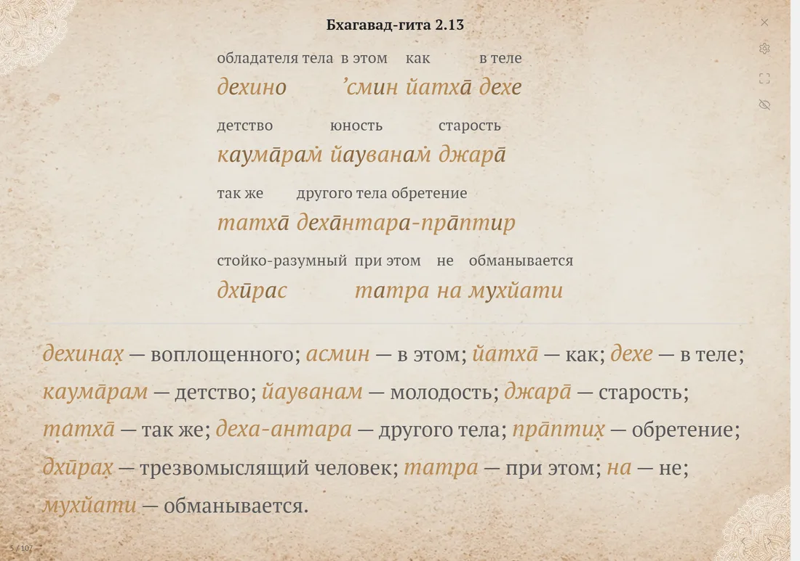
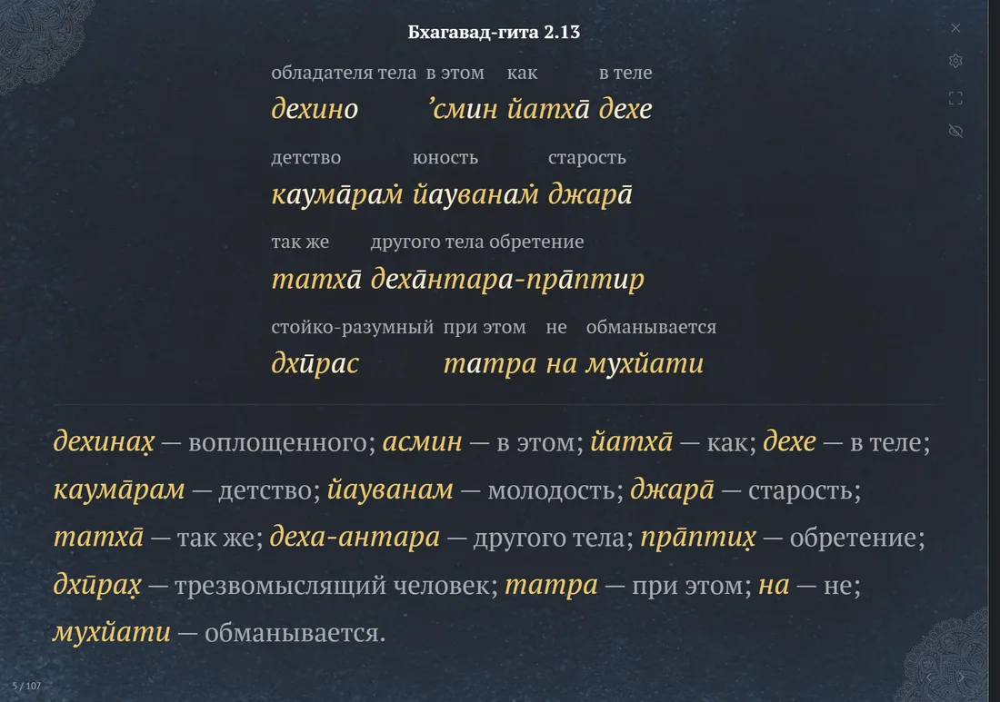
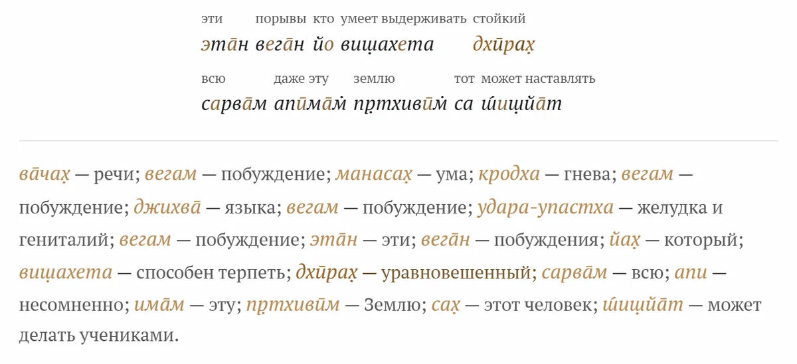
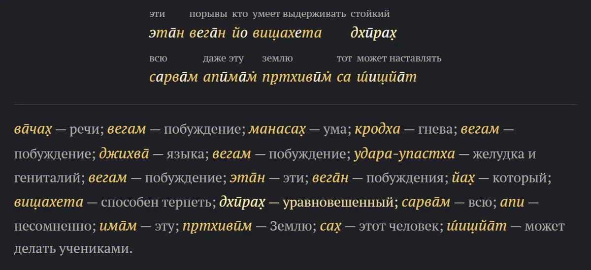
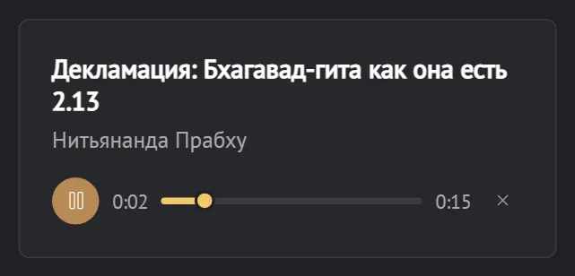
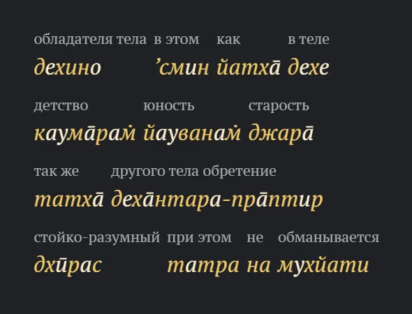
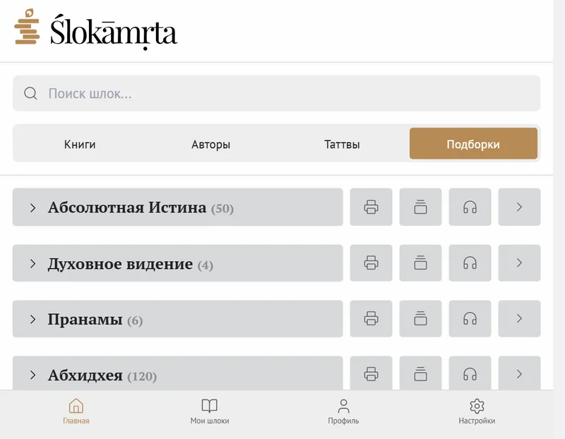
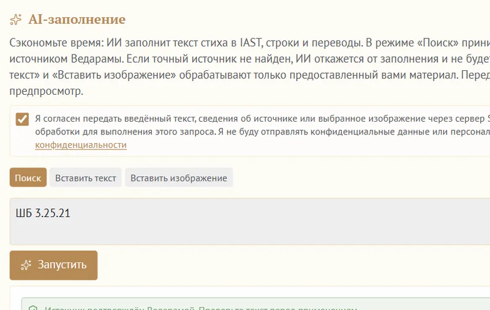
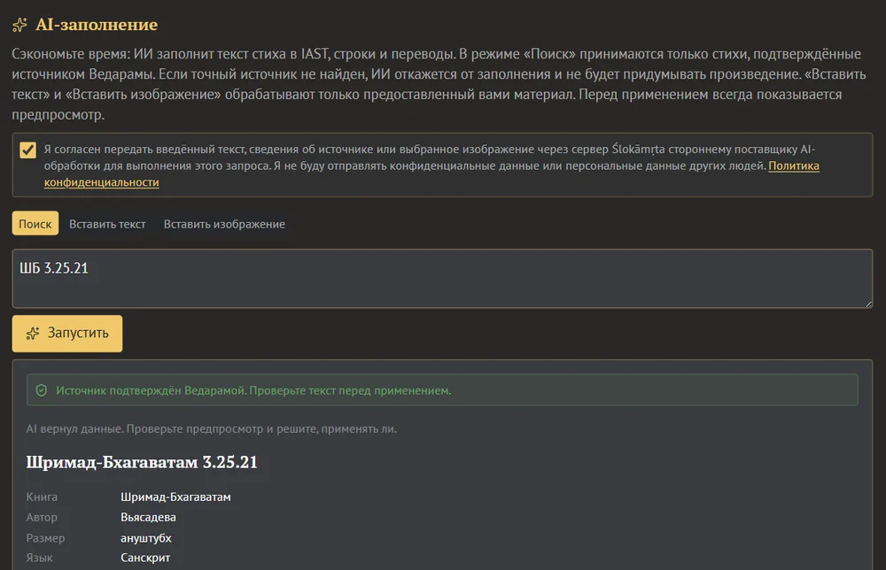

Кунджа у подножия Говардхана
Кунджа у подножия Говардхана
ПРОЕКТ ШРИ РУПА СЕВА КУНДЖИ
Шлокамрита
Шлоки, к которым
хочется возвращаться
Выберите шлоку, послушайте, как она звучит на санскрите, и разберите её слово за словом. Учите сами или вместе с преданными.
- 302
- опубликованных стиха
- 310
- аудиозаписей
- 62
- общие подборки
ШЛОКА ДНЯ
Так стих выглядит в Шлокамрите
Это рабочий фрагмент приложения. Включайте переводы, наведите курсор на слово санскрита, послушайте запись или откройте слайд.
Бхагавад-гита 2.13
обладателя теладехино в этом’смин какйатха̄ в теледехе
детствокаума̄рам̇ юностьйауванам̇ старостьджара̄
так жетатха̄ другого тела обретениедеха̄нтара‑пра̄птир
стойко-разумныйдхӣрас при этомтатра нена обманываетсямухйати
Наведите курсор на слово санскрита: его значение подсветится в пословном переводе
Запись не загрузилась. Послушать на странице стиха


Цветом выделены гуру — тяжёлые слоги, которые тянутся дольше
Открыть стих в ШлокамритеВОЗМОЖНОСТИ
Всё, чтобы выучить шлоку
Каждый снимок сделан в самой Шлокамрите.


Для вебинаров и занятий
Подсветка пословного перевода
Наведите курсор на слово санскрита, и его значение загорится в пословном переводе. Удобно объяснять стих на вебинаре: слушатели видят, о каком слове речь.
Попробовать

Гуру-слоги
Тяжёлые слоги выделены цветом. Видно ритм стиха, легче читать нараспев.
Посмотреть

Аудиозаписи
Рецитация преданных: слушайте стих и повторяйте за чтецом.
Послушать

Надстрочный перевод
Значение каждого слова прямо над санскритом. Отключите его, чтобы проверить себя.
ВключитьПоказ слайдов
Стих на проекторе или общем экране: санскрит, переводы или всё вместе.
Открыть слайд

Общие подборки
Стихи по темам: от «Абсолютной Истины» до пранам. Печать, слайды и аудио всей подборки.
Все подборки

Свои шлоки
Добавляйте стихи из общих разделов в свои подборки или вносите собственную шлоку.
Подробнее

Помощь ИИ
Если стих есть в Ведараме, ИИ перенесёт его и заполнит поля. Вы проверяете текст перед сохранением.
Как это работает
СОВМЕСТНОЕ ИЗУЧЕНИЕ
Шлоки в кругу преданных
В каждой группе преданные вместе читают шлоки, слушают рецитацию и обсуждают смысл стихов.
Всегда делясь друг с другом знанием и беседуя обо Мне, они испытывают огромное удовлетворение и блаженство.
Из перевода Шрилы Прабхупады
МОИ ШЛОКИ
Свои шлоки и подборки
Готовите встречу или занятие? Соберите нужные стихи в свою подборку.
Возьмите стих из общих разделов
Или внесите свою шлоку: строки, надстрочный и пословный перевод, источник.
Доверьте рутину ИИ
Если стих есть в Ведараме, ИИ быстро перенесёт текст и заполнит поля. Перед сохранением вы проверяете результат.
Покажите подборку
Откройте её как слайд-шоу на встрече или повторяйте стихи в приложении.



ДЛЯ ЛЕКЦИЙ И СОВМЕСТНОГО ЧТЕНИЯ
Покажите стих на экране
Откройте слайд-шоу из раздела книги и выведите его на проектор или общий экран. Оставьте только санскрит для рецитации или включите переводы для разбора. Наведите курсор на слово, и все увидят его значение.
ПРИЛОЖЕНИЕ ДЛЯ ANDROID И IPHONE
Шлокамрита на телефоне
Открывайте скачанные стихи без интернета. Слушайте рецитацию, повторяйте санскрит и возвращайтесь к своим подборкам.

О ШЛОКАМРИТЕ
Разобрать стих.
Запомнить. Возвращаться.
Шлокамрита помогает изучать и заучивать стихи из вайшнавских писаний. В одном месте собраны оригинальные тексты, надстрочные, пословные и литературные переводы, записи рецитации и подборки.
Подробнее о проекте

Шри Рупа Сева Кунджа
Шлокамрита — часть цифровых проектов ашрама, центра образования и служения у подножия Говардхана.
Сайт Шри Рупа Сева КунджиЧИТАТЬ, ПЕТЬ, УЗНАВАТЬ ВРАДЖ
Другие проекты ШРСК


ВАШ ПЕРВЫЙ ШАГ